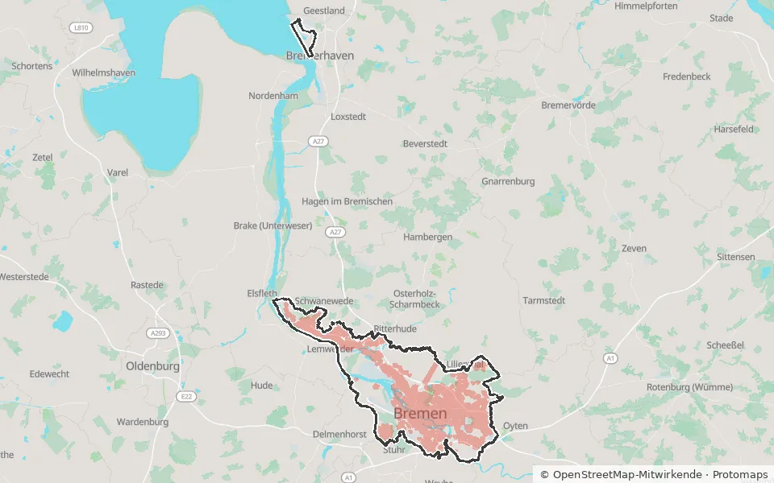
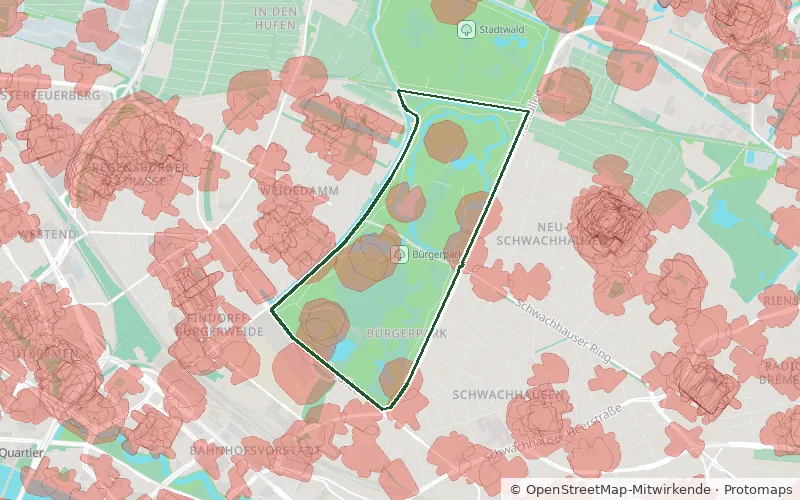
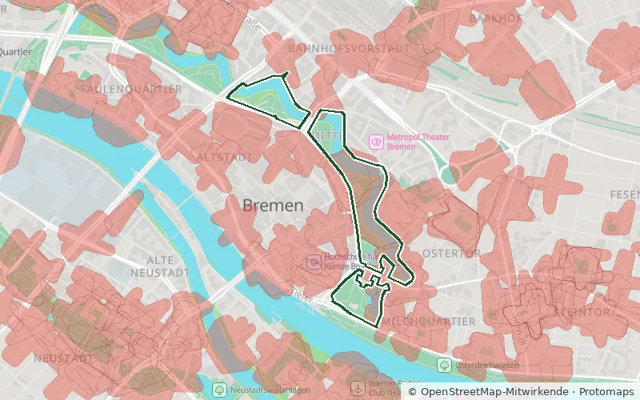
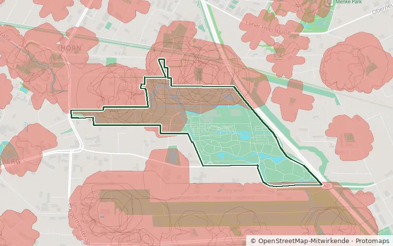
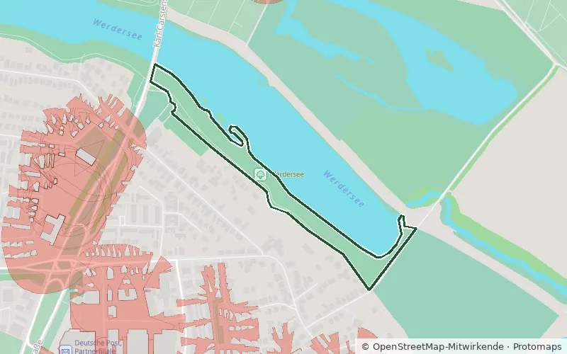
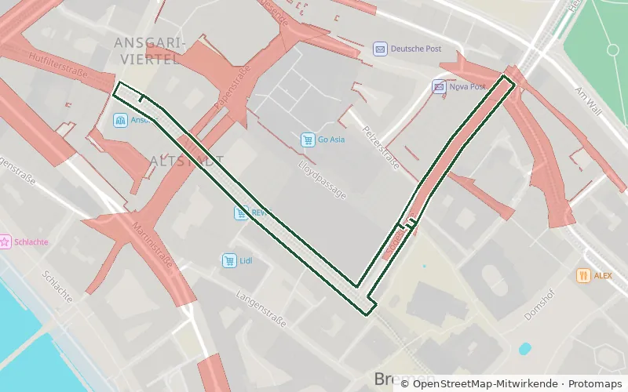
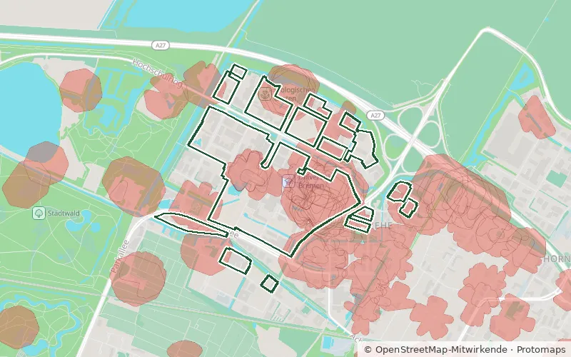

In Bremen ist öffentliches Kiffen auf 45 km² verboten, das sind 13,9 % der Stadtfläche von 326 km² (die Stadt Bremen, ohne Bremerhaven). Grund sind 2 397 Einrichtungen, in deren Sichtweite nach § 5 KCanG nicht konsumiert werden darf, vor allem Sportstätten und Spielplätze. Sichtweite heißt: höchstens 100 Meter vom Eingangsbereich, und nur dort, wo kein Gebäude die Sicht verdeckt. Dazu kommen die Fußgängerzonen, in denen zwischen 7 und 20 Uhr nicht konsumiert werden darf, und überall die unmittelbare Gegenwart von Kindern und Jugendlichen.

Woher die Zonen kommen
| Einrichtung | Anzahl | Zonenfläche |
|---|---|---|
| Schulen | 198 | 10,8 km² |
| Kitas und Kindergärten | 307 | 8,4 km² |
| Kindertagespflege | 12 | 0,2 km² |
| Spielplätze | 702 | 15,5 km² |
| Kinder- und Jugendeinrichtungen | 59 | 1,4 km² |
| Sportstätten | 1 119 | 23,3 km² |
Die Spalte rechts zählt jede Art für sich; weil sich Zonen verschiedener Einrichtungen überlappen, ist ihre Summe größer als die 45 km² oben. Den größten Teil machen die 1 119 Sportstätten aus, von Bolzplätzen über Turnhallen bis zu Fitnessstudios, gefolgt von 702 Spielplätzen.
Auf den Spielplätzen selbst verbietet das Bremische Nichtraucherschutzgesetz seit 2013 das Rauchen; nach Auffassung der Polizei gilt das auch für Cannabis. Ab dem 1. Januar 2027 nennt das Gesetz Cannabis ausdrücklich und verbietet das Rauchen auch unter den Dächern von Haltestellen (Gesetzblatt Bremen, September 2026). Anbauvereinigungen fehlen in der Tabelle: Wo sie anbauen, ist nicht veröffentlicht.
Bürgerpark und andere Parks
Im Bürgerpark liegen 23 % der Fläche in einer Zone, vor allem um die acht Spielplätze im Park. Kiffen ist dort aber ganz verboten: Die Parkordnung des Bürgerparkvereins untersagt den Konsum von Cannabis im Bürgerpark und im Stadtwald, ebenso Alkohol außerhalb der Gastronomie, und ab 22.30 Uhr darf sich niemand mehr im Park aufhalten (Parkordnung). Wer dagegen verstößt, kann aus dem Park verwiesen werden; ein Bußgeld sieht die Parkordnung nicht vor.

Die Wallanlagen rund um die Altstadt liegen zu 36 % in einer Zone; Kitas, Jugendeinrichtungen und Schulen liegen am Rand. Im Rhododendronpark in Horn sind es 36 %, wegen zweier Spielplätze und vieler Sportanlagen nebenan.


Weser und Werdersee
Auf einem 100 Meter breiten Streifen Land entlang der Weser liegen nur 7 % in einer Zone. Die Wiese mit Badestelle am Werdersee liegt außerhalb jeder Zone (0 %), ebenso die Schlachte fast ganz (4 %).

Innenstadt
Eine amtliche Gesamtliste der Bremer Fußgängerzonen haben wir nicht gefunden. Das Amtsblatt belegt einzelne, etwa die Langenstraße mit Großer und Kleiner Waagestraße (Amtsblatt 2013) und die Fußgängerzonen der Vegesacker Innenstadt (Amtsblatt 2025). Der Senat spricht von den „Fußgängerzonen Obernstraße und Sögestraße“, auch wenn durch die Obernstraße die Straßenbahn fährt (Senat, Februar 2024). Dort gilt zwischen 7 und 20 Uhr Konsumverbot; blau zeigt die Karte die Fußgängerbereiche, wie sie in OpenStreetMap eingetragen sind.
Von Obern- und Sögestraße liegen außerdem 35 % in einer Sichtweiten-Zone. Marktplatz (0 %) und Domshof (0 %) liegen außerhalb der Zonen, der Bahnhofsplatz fast ganz in einer (99 %).

Am Hauptbahnhof gilt ein Gesetz, das Alkohol und Betäubungsmittel verbietet; Cannabis gehört seit April 2024 nicht mehr zu den Betäubungsmitteln. Das Waffen- und Messerverbot in der Bahnhofsvorstadt und im Viertel regelt Cannabis nicht.
Hochschulen
Hochschulen sind nach § 5 KCanG keine Verbotsorte. Die Universität Bremen verbietet Cannabis aber per Hausordnung in allen Gebäuden und auf dem ganzen Gelände (Hausordnung). Nach § 5 KCanG allein läge der Campus zu 32 % in einer Zone: 19 Sportanlagen und vier Kitas liegen auf dem Gelände. Auch die Constructor University verbietet Besitz und Konsum auf ihrem Campus (Constructor University).

Was sonst noch gilt
Einen Bußgeldkatalog für das Cannabisgesetz haben wir für Bremen nicht gefunden; das Gesetz erlaubt bis zu 30.000 Euro. Zuständig ist das Ordnungsamt (Zuständigkeitsverordnung). Vom April bis Mitte Dezember 2024 bekam es 21 Anzeigen nach dem Cannabisgesetz (Senat, Januar 2025). Für Freimarkt, Osterwiese und Breminale haben wir keine eigene Regel zu Cannabis gefunden; wo viele Kinder und Jugendliche sind, greift das Verbot in ihrer Gegenwart (§ 5 Abs. 1 KCanG). Eigene Verbotszonen für Cannabis hat Bremen nicht (Stand 27. November 2026).
Häufige Fragen
Wo darf man in Bremen kiffen?
Außerhalb der roten Flächen, außerhalb der Fußgängerzonen zwischen 7 und 20 Uhr, nicht in Gegenwart von Kindern und Jugendlichen und nicht dort, wo ein Hausrecht es verbietet, etwa im Bürgerpark und auf dem Gelände der Universität. Eine weiße Fläche auf der Karte heißt nicht, dass Konsum dort erlaubt ist: Die Karte kennt weder Hecken noch Bäume, die die Sicht nehmen, noch Einrichtungen, die in OpenStreetMap fehlen.
Darf man im Bürgerpark kiffen?
Nein. Die Parkordnung verbietet Cannabis im ganzen Bürgerpark und im Stadtwald, auch dort, wo die Karte keine Zone zeigt.
Wie genau ist das?
Die Zonen sind aus OpenStreetMap berechnet, mit Gebäuden als Sichthindernis, und werden täglich neu gerechnet; die Zahlen auf dieser Seite sind vom 27. November 2026. Die Karte ist eine Orientierungshilfe, keine Rechtsauskunft. Wie gerechnet wird und wo die Grenzen liegen, steht auf der Über-Seite.
Fehlt eine Einrichtung oder ist eine falsch eingetragen? Korrekturen in OpenStreetMap erscheinen am Tag darauf auf der Karte; nur eintragen, was es vor Ort wirklich gibt.